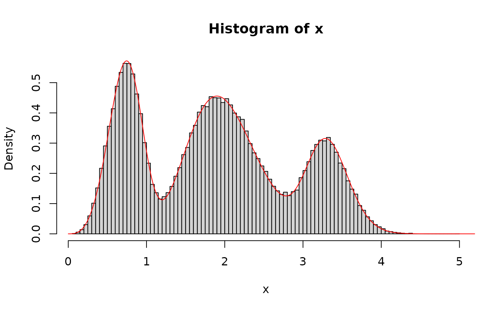

Density, distribution function, quantile function and random generation for mixture of distributions
dmixtdistr(x, phi, arg, log = FALSE, lower.tail = TRUE)
pmixtdistr(q, phi, arg, lower.tail = TRUE, log = FALSE)
qmixtdistr(
p,
interval = c(0, 1000),
phi,
arg,
lower.tail = TRUE,
log = FALSE,
tol = 1e-10,
...
)
rmixtdistr(n, phi, arg)q vector of quantiles. If 'x' or 'q' are matrices, then the function will operate on the matrix by row.
Numerical vector with mixture proportions, where \(sum(phi) = 1\).
A list of named vectors with the corresponding named distribution
parameters values. The names of the vector of parameters and the parameter
names must correspond to defined functions. For example, if one of the
involved distributions is the gamma density (see
GammaDist), then the corresponding vector of parameters
must be gamma = c(shape = 'some value', scale = 'some value'). See examples
for more details.
logical; if TRUE, probabilities p are given as log(p).
logical; if TRUE (default), probabilities are \(P[X <= x]\), otherwise, \(P[X > x]\).
vector of probabilities.
number of observations. If length(n) > 1, the length is taken to be the number required.
fitMixDist, mcgoftest
(for goodness-of fit), and for additional examples:
https://genomaths.com/stats/sampling-from-a-mixture-of-distributions/
set.seed(123) # set a seed for random generation
# A mixture of three distributions
phi <- c(5 / 10, 3 / 10, 2 / 10) # Mixture proportions
# Named vector of the corresponding distribution function parameters
# must be provided
args <- list(
gamma = c(shape = 20, scale = 1 / 10),
weibull = c(shape = 4, scale = 0.8),
lnorm = c(meanlog = 1.2, sdlog = 0.08)
)
# Sampling from the specified mixture distribution
x <- rmixtdistr(n = 1e5, phi = phi, arg = args)
# The graphics for the simulated dataset and the corresponding theoretical
# mixture distribution
hist(x, 100, freq = FALSE)
x1 <- seq(0, 10, by = 0.001)
lines(x1, dmixtdistr(x1, phi = phi, arg = args), col = "red")
